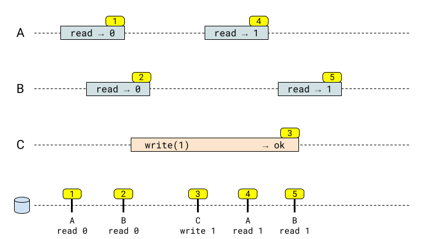
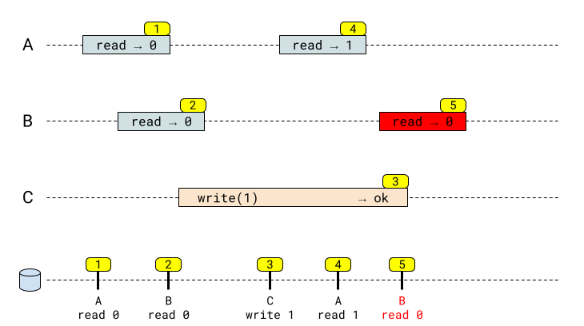
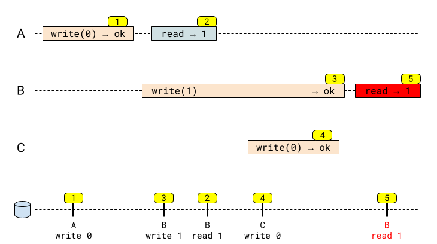

Linearizability is a strong consistency model in concurrent and distributed systems. From the paper introducing it [1]:
Linearizability provides the illusion that each operation applied by concurrent processes takes effect instantaneously at some point between its invocation and its response.
On first reading (and probably on the second and third...) this sounds a bit abstract, but it really is all there is to it. A slightly different way to think about it is - a linearizable system appears as if there's only one copy of data in existence, and all client operations apply to this data atomically. This post dives deeper into what this means in practice.
Registers
Linearizability is a single-object consistency model (see the "Linearizability vs. Serializability" section below for more on this). It's common in distributed systems literature to talk about a register - a single key-value pair, for example, stored in some distributed database. When clients write and read this register concurrently, we can analyze the history of operations and their results and determine if the system maintains linearizability.
Basic example
The following diagram describes a sequence of register reads and writes by three different clients; some of these operations are done concurrently. Time flows from left to right, and a colored rectangle denotes an operation; its left edge is the operation's start, and its right edge the operation's completion [2].
Here are the events, each with its own number in the yellow bubble:
- Client A reads the register and gets the value of 0. The read itself happened at some point in time in the database, denoted on the timeline in the very bottom of the diagram.
- Client B reads the value 0. Note that this read operation is partially concurrent with the write operation (3); concurrent operations can execute in any order, but here (2) happened to be executed before (3) (we know this because the value 0 was read, not 1).
- Client C writes 1 into the register.
- Client A reads 1 from the register. This read is also concurrent with the write, and thus could end up with any result, but since the result in this timeline is 1, we know it happened after (3).
- Client B reads 1 from the register.
This sequence of events is valid in a linearizable system, because we can construct a serial history of events (the bottom timeline) that's consistent with our results. Each event occurs instantaneously at some point between the start and finish of the client request.
Compare this to the following sequence, which is not valid:
This sequence is similar to the first one, with one difference: B's read in (5) results in 0. Since (5) is concurrent with (3), when seen in isolation this isn't unreasonable. However, since in (4), client A already observed the value 1 in the register and (4) happens before (5), this sequence is invalid in a linearizable system. We can imagine systems with weaker consistency guarantees producing this history, but such systems are not linearizable.
Another way to look at it is examine the timeline in the bottom of the diagram. Notice that (5) reads 0, after (3) happened. We just can't find a way to arrange this history so it looks sequential - therefore, it's inconsistent with linearizability.
A more subtle example
Here's a more subtle example, taken from the linearizability paper:
This sequence of events is invalid for a linearizable system! To understand why, let's follow the timeline at the bottom of the diagram.
(3) Client B's write of 1 executes before (2) client A's read, because A reads 1 from the register. If the read at (2) happened before the write at (3), it (the read) would result in 0, not 1.
Event (4) has to happen after event (2), since it starts after (2) ends. But we've just reasoned that (2) happens after (3); therefore, (4) happens after (3) - even though these two writes are concurrent, their order is imposed by observing other events.
Finally, since we've just proven that (4) happens after (3), the value in the register at the conclusion of (3) is 0, not 1; therefore, the read of 1 in (5) is invalid. This system cannot be linearizable. As before, you can try to arrange the events in the bottom of the diagram into some sequential order - this attempt will fail, because no consistent sequential order can account for the observed events.
A formal definition
I personally found the formal definition of linearizability in the Herlihy & Wang paper somewhat obscured by attention given to potentially unfinished operations. If we assume that every operation has a start and an end, it's easier to restate the formal definition as follows.
An operation e has the timestamps start(e) and end(e); these are the left and right boundaries of the rectangles in the diagrams shown above.
A history H exists with a strong partial order on operations [3]: if precedes in H. Operations unrelated by are said to be concurrent in H. In our diagrams, H represents the observed history (the part of the diagram with the overlapping rectangles). The formal definition captures what it means for us to know that some operations precede others, while other operations are concurrent.
For example, in our last diagram above if H is the history shown, then , but the pair is not in the relation , since these operations are concurrent.
If H is a sequential history, then is a total order. It means there are no concurrent operations.
Now it's time for the definition of linearizability. H is linearizable if:
- H is equivalent to some sequential history S
The second item requires a bit of elaboration: recall that and are relations. being a subset of means that the partial order of operations in the real-time history H is preserved in the linearization.
We then call S the linearization of H. In our diagrams, S is the bottom line where operations are shown on the server happening immediately; they are still represented by start(e) and end(e) in the history (we can just assume start(e) and end(e) are infinitesimally close in time, since the DB applies operations atomically).
Linearizability vs. Serializability
Linearizability is often confused with serializability - another consistency model. The two are fundamentally different, though:
- Serializability is a multi-object property useful to describe transactions that consist of multiple operations that may potentially touch multiple objects; informally, it means that transactions happen atomically, and their sub-operations cannot be observed in isolation or intermix.
- Linearizability is a single-object property, talking about the observed effects on a single register, as this post demonstrates.
For a great taxonomy of consistency models, see this page from Jepsen.
Additional resources
Kyle Kingsbury - on his blog and through his company Jepsen - has a wealth of great resources on the subject of linearizability and other consistency models. Some examples:
- The taxonomy, as mentioned above, and the related blog post
- Knossos, a linearizability checker: blog post and project page
- Jepsen's analysis of etcd has an interesting practical discussion of linearizability in a real-world system
| [1] | Herlihy, Maurice P.; Wing, Jeannette M. (1990). "Linearizability: A Correctness Condition for Concurrent Objects". ACM Transactions on Programming Languages and Systems. |
| [2] | The operation itself happens instantaneously on the server at some moment within the rectangle's boundaries, but we don't know exactly when due to network delays. |
| [3] | For a refresher on the math used here (relations, orders) see this post. |